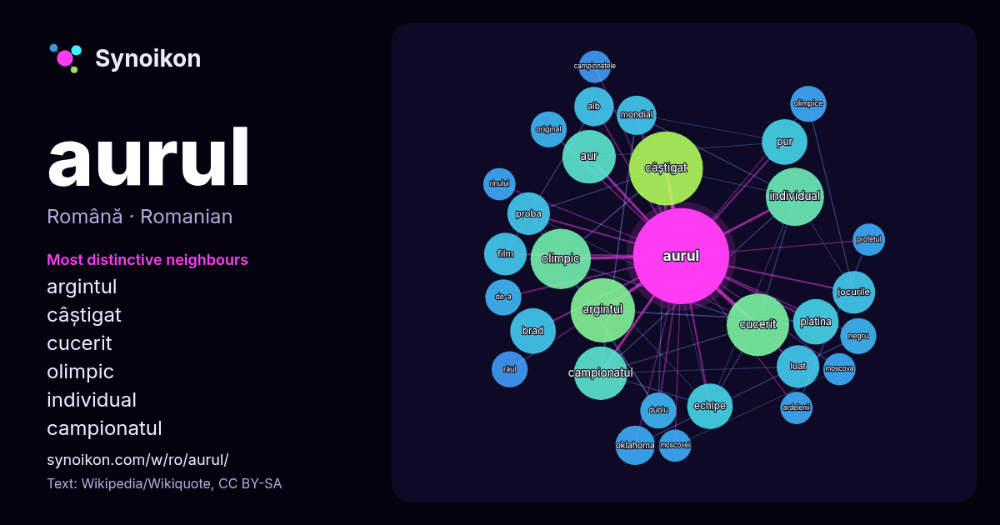

Română · lista cuvintelor zilei
aurul
“gold” · Cuvintele găsite în jurul lui în 274 apariții de pe Wikipedia, Wikiquote.

Cei mai specifici vecini
- argintul 17×
- câștigat 17×
- cucerit 15×
- olimpic 15×
- individual 13×
- campionatul 11×
- aur 10×
- platina 9.0×
- brad 8.8×
- pur 8.4×
- echipe 7.9×
- proba 7.8×
- jocurile 7.6×
- oklahoma 6.9×
- alb 6.3×
- luat 6.1×
- film 5.9×
- olimpice 5.8×
- dublu 5.7×
- original 5.5×
× = de câte ori mai des decât în textul general de pe Wikipedia.
Cei mai frecvenți vecini
- câștigat 21
- argintul 16
- cucerit 15
- olimpic 14
- individual 13
- aur 11
- campionatul 11
- brad 8
- echipe 8
- platina 8
- pur 8
- film 7
- jocurile 7
- luat 7
- proba 7
- s-a 7
- alb 6
- mondial 6
- oklahoma 6
- atât 5
În context
- că aurul a fost descoperit înaintea cuprului. Cules sub forma unor bucăți strălucitoare din nisipurile râurilor și din depunerile aluvionare, aurul a fost Wikipedia snippets · Aur
- Clubul Sportiv Municipal Aurul Brad, cunoscut sub numele de Aurul Brad, este un club de fotbal profesionist din Brad, județul Hunedoara, care evoluează Wikipedia snippets · CSM Aurul Brad
- minier Cedar City a pus, prin abuzuri, monopol pe tot aurul extras de mineri, luând cu de-a sila aurul pentru a-l valorifica el. Minerii s-au speriat și s-au Wikipedia snippets · Profetul, aurul și ardelenii
- 31 d.Hr.. p. i8. ^ Aurul lui Mackenna la themoviedb.org Filmografia lui Gregory Peck Listă de filme străine până în 1989 Aurul lui Mackenna la Internet Wikipedia snippets · Aurul lui Mackenna
- arbitri. Deoarece aurul din zăcămintele din California era atât de concentrat, primii Forty-Nineri pur și simplu au strecurat aurul din râurile și pâraiele Wikipedia snippets · Goana după aur din California
- utilizează aurul ca monedă unică și unitate de cont nu au apărut niciodată înainte de secolul al XVIII-lea. Timp de milenii, a fost argintul, nu aurul, care Wikipedia snippets · Etalon-aur
- Aurul de la Moscova sau Aurul Moscovei (în spaniolă Oro de Moscú) sau alternativ Aurul Republicii (în spaniolă Oro de la República) a fost cantitatea de Wikipedia snippets · Aurul de la Moscova
- care nu conțin aur real. Aurul pur e de 24 de karate. Foița reală de aur galben are aproximativ 91,7% aur pur (adică 22 de carate). Aurul alb de culoare Wikipedia snippets · Foiță de aur
Mai multe cuvinte
Precalculat la 2026-10-09 cu setările implicite (±5 cuvinte, corpus mediu). Harta interactivă îl poate actualiza cu date live.
Interfață tradusă automat; corecturile sunt binevenite.